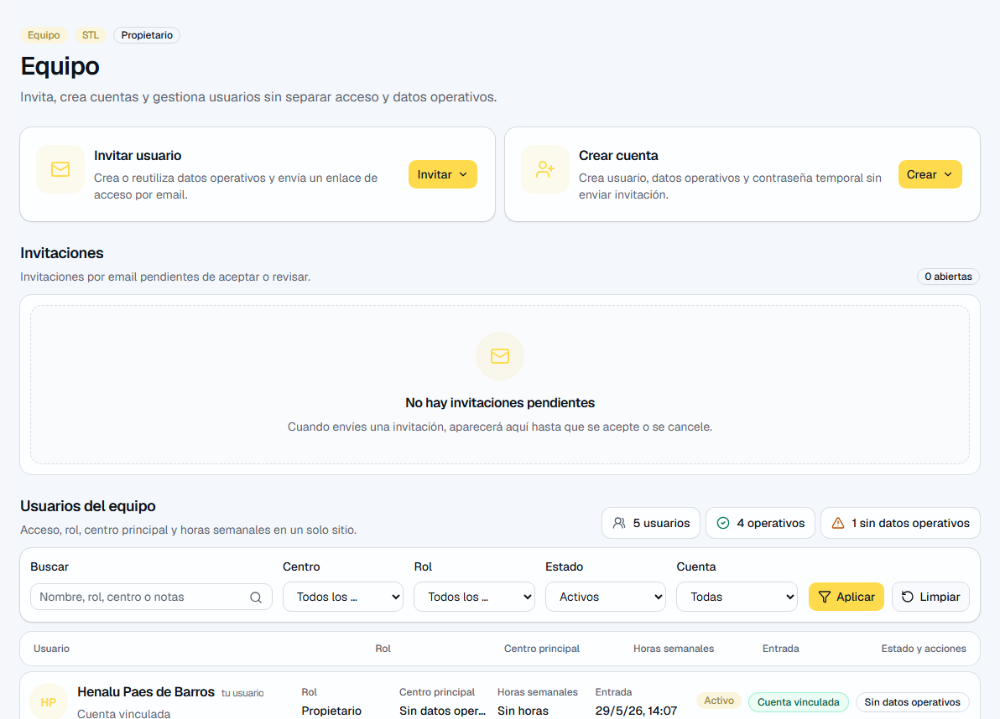
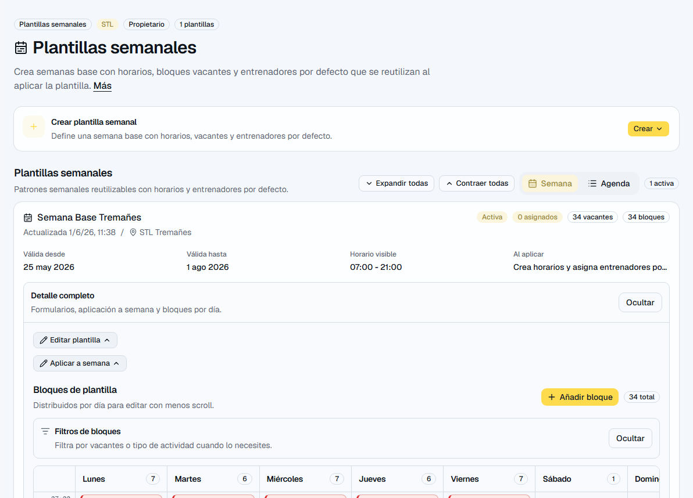

Capturas de referencia
Las imágenes ayudan a reconocer la pantalla y los elementos principales.




Control general del box, accesos, configuración y supervisión operativa.
Para quien toma decisiones sobre el box y necesita ver si la semana está bajo control.
| Pantalla | Ruta | Sirve para |
|---|---|---|
| Inicio | /app | Estado semanal, avisos y accesos rápidos. |
| Equipo | /app/coaches | Usuarios, roles, invitaciones y fichas operativas. |
| Centros | /app/centers | Sedes disponibles para planificar. |
| Tipos | /app/class-types | Catálogo de actividades y requisitos. |
| Plantillas | /app/templates | Semana base reutilizable. |
| Horario | /app/schedule | Bloques reales de la semana y asignaciones. |
| Cobertura | /app/coverage | Riesgos de clases sin cubrir o insuficientes. |
| Configuración | /app/settings | Nombre, color y reglas operativas. |
Empieza por estos recorridos. Son los que más valor dan en el uso diario.
Estas zonas no siempre son la primera parada, pero ayudan a entender la operación completa.
| Función | Dónde está | Para qué sirve |
|---|---|---|
| Cobertura | /app/coverage | Reúne clases sin cubrir, cobertura insuficiente y conflictos de asignación para resolverlos desde el bloque real. |
| Solicitudes | /app/requests | Centraliza peticiones de cambio o cobertura para revisar qué persona pide ayuda y qué bloque se ve afectado. |
| Ausencias | /app/absences | Permite revisar peticiones y estados de ausencia, y entender su impacto operativo sin mostrar motivos sensibles innecesarios. |
| Jornadas previstas | /app/work-windows | Define cuándo se espera que una persona esté disponible o presente, separado del horario de clases. |
| Mi fichaje | /app/time | Registra jornada propia y permite revisar cierres, correcciones y posibles excesos como apoyo interno. |
| Mi cuenta y firma | /app/account | Guarda perfil propio, avatar privado y firma interna propia. La firma no permite firmar por otra persona. |
| Documentos | /app/documents | Muestra documentos autorizados y archivos vinculados a programación o contexto interno permitido. |
| Estadísticas | /app/stats | Resume carga por coach, clases por tipo, actividad por centro y avisos operativos. |
| Plan y facturación | /app/settings/billing | Muestra plan, límites y uso disponible para la organización. |
Las imágenes ayudan a reconocer la pantalla y los elementos principales.

